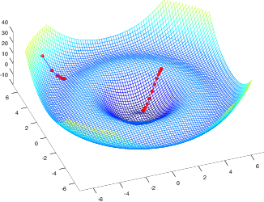
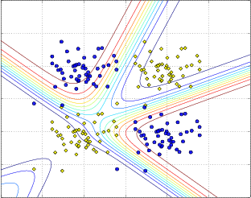
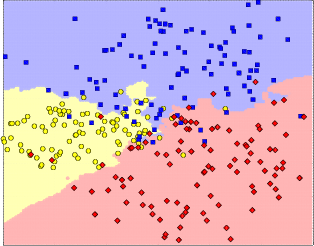

Crate rustml [−] [src]
Library for doing machine learning with Rust.






Features
(click on a link to get more details)
- highly optimized linear algebra via BLAS integration (i.e. operations on vectors and matrices)
- gradient descent with debugging capabilities (e.g. with learning curves)
- neural networks
- DBSCAN clustering algorithm
- linear regression
- optimization of linear regression with gradient descent
- classification with k-nearest neighbours
- sliding windows for arbitrary dimensions (e.g. for image processing)
- standard databases (e.g. MNIST database of handwritten digits)
- feature scaling
- video and image processing via integration of OpenCV
Performance
When it comes to vector and matrix operations rustml makes heavy use of highly optimized numeric libraries like BLAS or ATLAS. By default CBLAS is used because it is installed on many systems by default. However, in many cases performance can be greatly improved when switching to ATLAS. For a detailed description on how to optimize the numeric computations please read the separate documentation on this topic available here.
Machine Learning Pipelines with Rustml
The Rustml pipeline is a small and simple framework to build and configure machine learning pipelines that have been shown to be a quite powerful technique when doing machine learning. How pipelines can be created with Rustml can be seen here.
Example how to do classifications
In the following example a simple k-nearest neighbour algorithm is used to predict
the label of a vector with two features based on the examples in the matrix
m (the training set) with their known labels stored in the vector labels.
use rustml::*; let m = mat![ // training set 1.0, 2.0; // each row contains one example for which the label is 1.1, 2.1; // known 2.0, 3.0; 0.9, 1.9; 2.1, 2.9 ]; let labels = vec![1, 2, 2, 1, 2]; // predict the label for feature vector [1.3, 2.0] let target = knn::classify( &m, &labels, &[1.3, 2.0], 3, // look at the 3 nearest neighbours to make the decision |x, y| Euclid::compute(x, y).unwrap() // use Euclidean distance ); assert_eq!(target, 1);
All examples
- k-nearest neighbor: classifies the examples of the test set of the MNIST database of handwritten digits with a simple k-nearest neighbor approach. (this examples requires an external dataset that has to be downloaded separately (see here)
- matrix multiplication: multiplies two 6000x6000 matrices.
- vector addition: add vectors
- feature scaling
- feature extraction from all frames of a video: this examples requires an external dataset that has to be downloaded separately (see here).
- plot with octave: create plots with Octave
- gradient descent: use gradient to optimize a function with two parameters
- image grid: plot some of the handwritten digits of the MNIST database into a grid
Reexports
pub use distance::{Distance, Euclid, DistancePoint2D}; |
pub use matrix::{HasNan, Similar, Matrix, IntoMatrix}; |
pub use math::{Dimension, Normalization, Mean, MeanVec, Sum, Var, SumVec}; |
pub use ops::{MatrixScalarOps, Ops, VectorScalarOps, VectorVectorOps, MatrixMatrixOps}; |
pub use ops_inplace::{VectorVectorOpsInPlace, MatrixMatrixOpsInPlace}; |
pub use gaussian::{GaussianEstimator, GaussianFunctions, Gaussian}; |
pub use geometry::{Point2D}; |
pub use vectors::{Linspace, VectorIO}; |
pub use datasets::{mixture_builder, normal_builder}; |
Modules
| blas |
Bindings for BLAS/ATLAS for high performance vector and matrix operations. |
| consts | |
| csv |
Functions to parse and create comma-separated values (CSV). |
| datasets |
Module to easily access popular datasets often used to measure the performance of machine learning algorithms. |
| dbscan |
Implementation of the DBSCAN clustering algorithm. |
| distance |
Functions to compute the distance between vectors. |
| gaussian |
Module to handle Gaussian distributions. |
| geometry |
Collection of some common data structures. |
| hash |
Hash functions. |
| io |
Functions to read and write files (e.g. gzip compressed files). |
| knn |
Functions to compute the k-nearest neighbours. |
| math |
Module with a collection of different mathematical functions. |
| matrix |
Module that contains structs and functions useful for doing matrix operations. |
| nn |
Module which provides implementations of neural networks. |
| norm |
Functions to compute norms of vectors. |
| octave | |
| opencv |
Experimental module for image and video manipulation. |
| ops | |
| ops_inplace |
Provides scalar, vector, vector-vector, vector-matrix and matrix-matrix operations. |
| opt |
Module for optimization with gradient descent. |
| regression |
Module for linear regression. |
| scaling |
Module to scale vectors and matrices. |
| sliding |
Sliding windows over strings, bytes and ranges for arbitrary dimensions. |
| vectors |
Functions for vectors. |
Macros
| mat! |
Macro to create a matrix. |